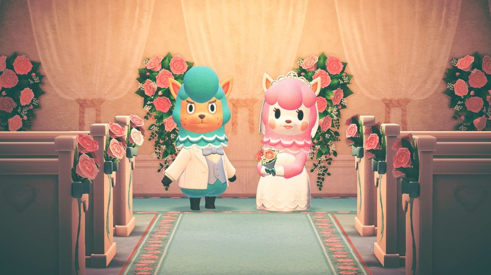
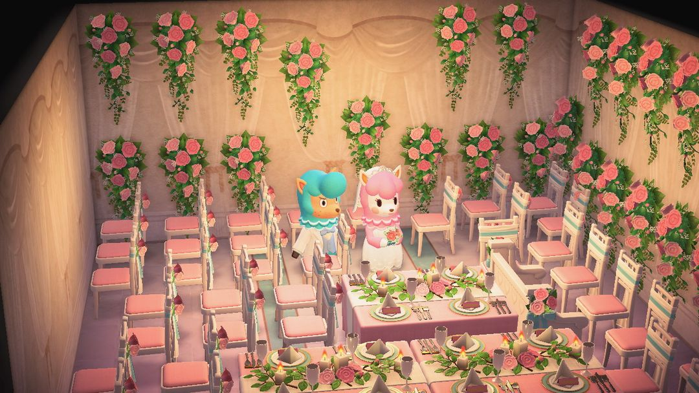

六月新娘：去巴猎岛帮莉咏和健兆拍婚纱照
婚礼季整个 6 月都能玩，每天拍一张，攒爱的结晶换婚礼家具
婚礼季在游戏里叫「六月新娘」，主角是开改造店的羊驼夫妇莉咏和健兆。两人想在巴猎的摄影棚补拍一套婚纱照，请你帮忙布置场地。整个 6 月每天都能去拍一次，拍完能拿到婚礼家具，还有一种叫「爱的结晶」的东西，攒起来找健兆换更多婚礼家具。
这个活动不赶时间，难的是坚持。婚礼家具要连拍 7 次才全部开放，爱的结晶全部换齐也要 260 颗左右，一天拍一次慢慢攒。6 月中旬之前开始都来得及，越早动手，后面越从容。下面先说活动怎么开始、每天怎么拍，再说结晶怎么花最划算。

布置好的礼堂和一对新人（图：任天堂宣传图，经 Nookipedia）
01什么时候、去哪
日期是固定的：每年 6 月 1 日到 6 月 30 日，全天都能去。南半球也是 6 月，不跟着季节翻转，两边玩家同一天开始、同一天结束。
| 半球 | 日期 |
| 北半球 | 每年 6/1 – 6/30 |
| 南半球 | 每年 6/1 – 6/30（不翻转） |
6 月 1 日一出家门，巴猎就会打电话来求助。去机场找莫里，选去巴猎岛，到了以后摄影棚门口能看到巴猎、莉咏和健兆凑在一起聊天，走过去搭话，活动就开始了。
02每天怎么拍
每天的流程都差不多，走一遍就熟了。
1. 先找莉咏说话，她会讲当天想拍什么样的场景。第一天拍的是婚礼仪式，要用白色和粉色的东西来布置。
2. 进房间布置。能摆的是健兆备好的婚礼家具，不用从自己岛上搬东西过来。
3. 布置好以后，掏出相机给两人拍一张，再拿去给莉咏过目。
4. 莉咏满意了，会送你一件婚礼家具和一些爱的结晶。爱的结晶留着，找健兆换别的婚礼家具。
每天能拍一次，题目每天都换。摆的婚礼家具越多、越贴题，给的爱的结晶越多，少的时候几颗，多的时候十几颗。所以别随手摆两件就交差，按她说的主题把场地尽量摆满。
第 6 天比较特别，是婚宴：这次能把岛民请进场地当宾客，也不用拍照，办完以后会收到「莉咏和健兆的彩绘碟」。
第 7 次拍摄之前，巴猎会送你「婚礼栅栏」的DIY手册；拍完第 7 次，健兆再送「婚礼棒」的DIY手册，剩下的婚礼家具也全部开放，能换的东西一下子多了。

2020 年 6 月拍的婚宴：玫瑰墙、粉色椅子、长桌（图：作者 Switch 截图）
03爱的结晶能换什么
攒下的爱的结晶拿去找健兆换家具。他一天最多卖 8 件，买的东西第二天寄到家里。各样东西的价格（单位：爱的结晶）如下：
| 东西 | 价格 |
| 婚礼管风琴 | 40 |
| 婚礼拱门、纯白洋装、纯白晚礼服 | 各 20 |
| 纯白头纱、各色婚礼墙和地板、婚礼派对墙 | 各 12 |
| 婚礼主桌、婚礼桌、纯白鞋、纯白浅口鞋 | 各 6 |
| 婚礼长椅、婚礼蛋糕、婚礼欢迎牌 | 各 5 |
| 婚礼蜡烛、婚礼花架、婚礼地毯 | 各 4 |
| 婚礼椅、婚礼挂饰 | 各 3 |
每样买一件，加起来大约要 260 颗。健兆一天只卖 8 件，就算结晶一次攒够了，也得分几天才买得完，所以别把换家具全压到月底。
婚礼主题的东西不止健兆这一处。6 月里 ABLE SISTERS 会挂出白无垢、角隐、白色带家徽和服袴；Nook购物 也上架了结婚钟、结婚门牌、戒枕、花瓣篮，想在自己岛上布置一场婚礼的话，可以顺路配齐。
04怎么攒得更快
先换便宜的，把数量铺上去。爱的结晶给多少，看的是场地里摆了多少婚礼家具，所以前几天先换椅子、蜡烛、花架这类三四颗一件的，场地摆得越满，之后每天拿到的结晶越多，越攒越快。
管风琴和拱门放到最后。一件要 40 颗、一件要 20 颗，早早买下来既占掉好几天的结晶，又不如一堆小件摆得满。等便宜的都买齐了，再集中攒这两样。
别断太久。婚礼家具要连拍 7 次才全部开放，6 月 24 日之后才开始的话，到月底就拍不满 7 次了。开始得早的话，中间漏掉一两天也还来得及。
小提示拍完第 7 次以后，婚礼家具会多出几套配色，莉咏出题时也会指定配色。照着她说的颜色挑家具来摆，结晶才拿得满。
052.0 / 3.0 有什么变化
2.0 起，节日活动每年会自动到来，不用再等任天堂发更新。
往年已经拿过婚礼栅栏、婚礼棒DIY手册的玩家，第二年巴猎和健兆会改送 10 颗爱的结晶。
3.0 的更新说明里没提到这个活动有改动，玩法和以前一样。
动森圈圈 · 小程序和 iOS App 都搜「动森圈圈」